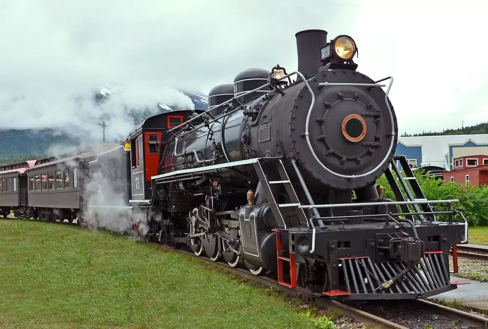
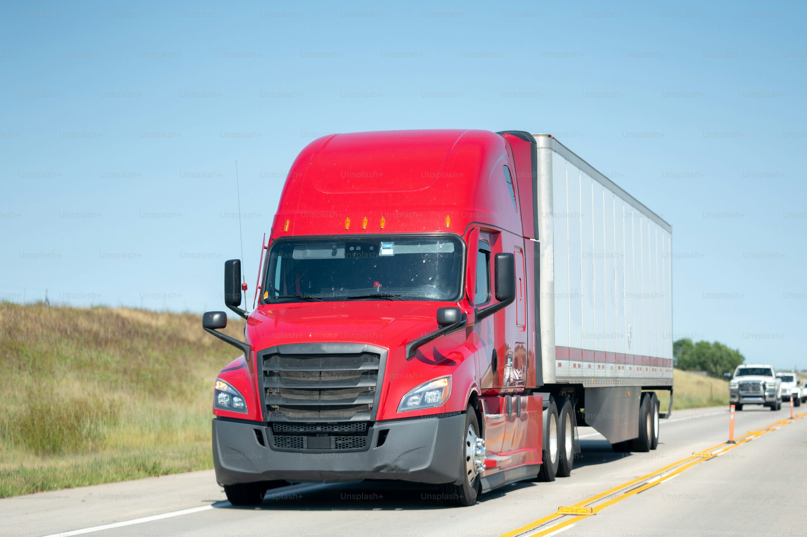
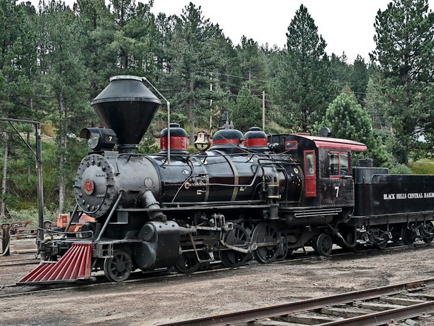

Transportes

Transporte Ferroviário

Transporte Rodoviário:

O transporte de produtos agrícolas do campo para os centros urbanos é essencial para garantir o abastecimento das cidades. No Brasil, o transporte rodoviário é o mais utilizado nesse processo, devido à grande quantidade de estradas que conectam o campo a cidade, mas o combustível é caro. O transporte ferroviário é uma alternativa eficiente, especialmente para grandes volumes e longas distâncias.